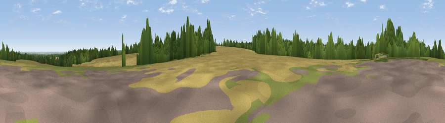

Viewpoint near Charing
#19750 in England · top 22% of its area beats it · near Charing · path 87 mWhere it is
The exact computed spot (TQ 94725 52525). Click the marker for map links.
Public access: the nearest public right of way is about 87 m away — the final stretch may cross private land. Computed from Natural England's CRoW access layer and OpenStreetMap rights of way — not the legal definitive map. Always verify locally.
The view, rendered

A 360° render of this exact spot computed from the terrain model, tree cover and land cover — summer colours, afternoon light, calibrated against photographs of famous viewpoints. Real trees, hedges and buildings will differ in detail.
The panorama
Grey silhouette: terrain skyline in each direction (720 bearings, Earth curvature and refraction included). Dashed green: skyline with trees (+15 m) and buildings (+8 m) as obstacles. Blue strip: how far the ground is visible on each bearing.
Where the view opens
Wedge length = distance to the farthest visible ground on that bearing (vegetation-aware). Rings at 10, 25 and 50 km.
What fills the view
55% cropland · 29% woodland · 13% grassland · 2% water ·
Angular shares of the visible panorama (visual magnitude), not map area. Landscape diversity 0.47 (0–1 Shannon).
Key numbers
More beautiful places nearby
The staircase of upgrades: each row has a higher view potential than everything closer. Driving times are estimates from straight-line distance, calibrated against real road routing — check an actual route before setting out.
| Place | Direction | Drive | Score |
|---|---|---|---|
| Viewpoint near Charing | S · 2 km | ~5 min | 68.6 |
| Viewpoint near Westwell | SE · 6 km | ~12 min | 72.2 |
| Viewpoint near Lympne | SE · 23 km | ~38 min | 72.6 |
| Tolsford Hill | SE · 25 km | ~41 min | 77.9 |
| Viewpoint near Capel-le-Ferne | ESE · 33 km | ~50 min | 80.2 |
| Viewpoint near Willingdon | SW · 62 km | ~85 min | 83.4 |
| Wilmington Hill | SW · 63 km | ~86 min | 85.4 |
| Viewpoint near Alciston | SW · 65 km | ~88 min | 86.8 |
51.23867, 0.78817 · source: screening · position refined by local search. Computed location — check access rights before visiting.